MC 2026-11-27 00:23 逐条审核反馈的返工。只放返工的 4 辆车（hiroden-1000 是推送、不算返工，不放）。批次审核页：map-verify-fix-batch1。模型在 ooep/floral-salad-8734 的 models-pipeline 分支，index 662 个模型，远端 HEAD 60c9727（aidu-at400 重建）。全部 unmapped 推（lines={}）。
根因（贴图，不是几何）：纸模端件左右各有一对梯形白色粘贴耳（のりしろ），v1 的 6 个端件裁切框把它整个框了进去；端盖/裙板 UV 把整张贴图拉满车宽，白耳区（框内左右约 17~24 px/边）映射成司机面两侧各约 13% 宽的通高白竖条，并延至裙板以下。几何无问题（v1→v2 逐顶点比对 maxdiff = 0.00）。
改了什么：6 个端件框横向收紧到端面轮廓（司机面框 173→125 px，3 个贯通件 172/171→127 px）；补裙板行向填边（司机端裙板梯形灰盖底行白边填 2,932 px，白占比 5.9%→0.94%）；涂装/车窗/转向架/侧带/车顶条/车底带未动。
推送：提交 628f8c4b（父 8543b02b，单 commit），car1 210b1ed8…、car2 a2925696…、car3 8172f309…，远端下载逐字节比对一致；index 仍 661。
验证：审计与 v1 逐项一致（corr 全 −1.00，轮底 y=0）；三张新图边距全 ≥2%（整列 L/R 0.038、斜视角 L 0.085、三维形态图 L 0.056）；司机面满幅（HOK'SO/7501 正字）、实车照片（7502）对照通过。
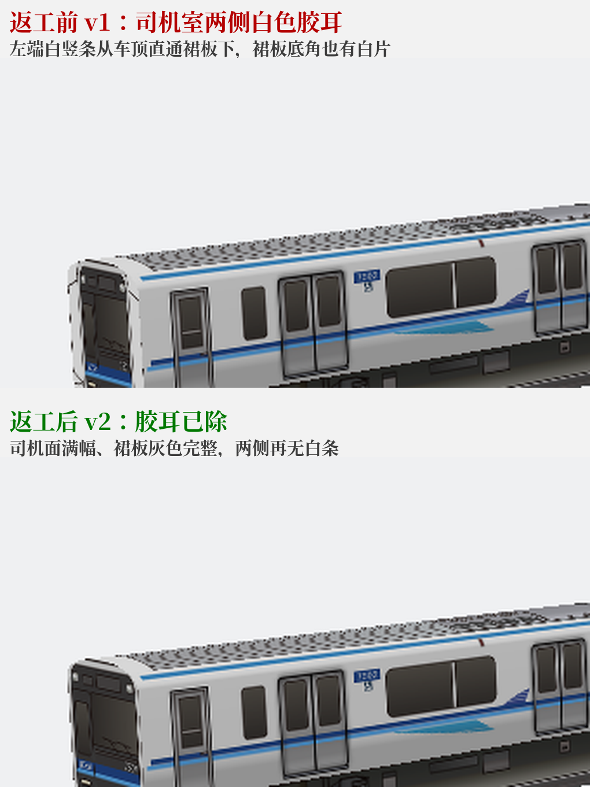
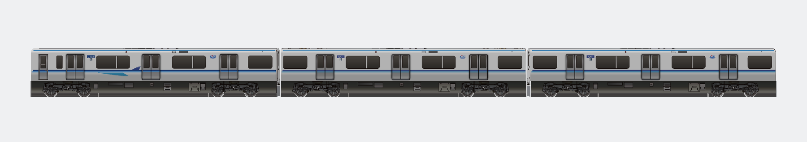
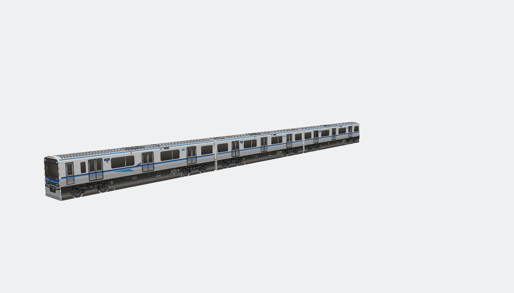
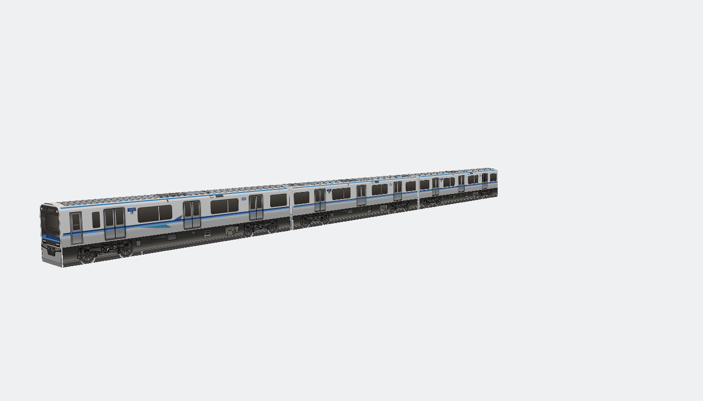
根因（贴图，不是几何）：司机面框原取 186 px，左右两列是纸模空白奶油梯形胶耳（糊しろ）：脸左右缘暗线在 x=556/694（脸宽 138 px），蓝带只存在于 x=555–691，耳列 531–554、695–717 完全缺失；耳片各宽 25/23 px。cap_uv 把整张贴图横向拉满 2.90 m，耳片各占面宽两侧约 0.36–0.39 m，顶部圆角处斜翘出侧墙；裙源同被白纸污染（旧 skirt_cab1.png 外列均值 181、白 px 占 14.7%）。几何无超宽（bbox 宽 2.90 m 不变）。
改了什么：司机面框改为脸部-only 138 px；裙板白纸残留填裙板灰；仅变 4 个贴图 + car1/car3 GLB，car2 逐字节不变、其余 20 贴图/consist/涂装/车窗/转向架全不变。
推送：提交 8543b02b（父 47394229，单 commit），car1 34f2c7b3…（1,677,444 B）、car3 f5362fc7…（1,662,924 B），远端下载逐字节比对一致；index 仍 661。
验证：3 辆各 11,126 tris、watertight、corr 全 −1.00、轮底 y=0；三张新图边距全 PASS（整列 L/R 0.066、斜视角 L 0.065、三维形态图 L 0.026）；斜视角蓝带贯通到面边、无耳片凸出。
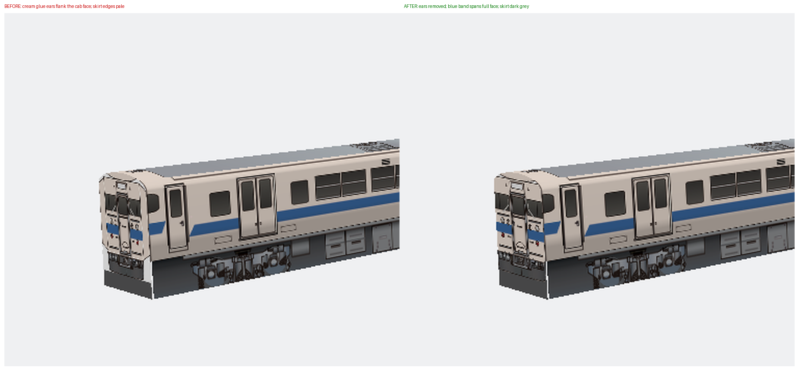
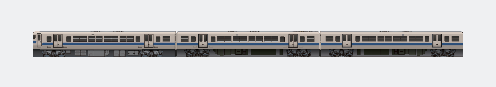
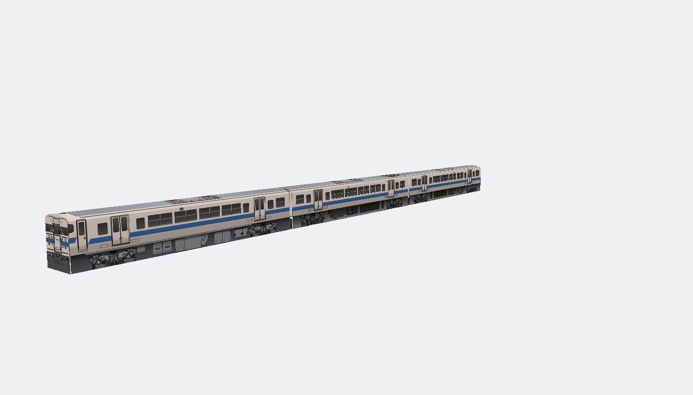
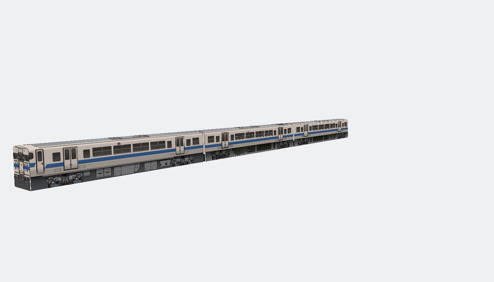
根因（贴图，不是几何）：端面贴图里的纸模粘贴片（のりしろ）：司机面/贯通端件框内两侧各有一片白色梯形粘贴片（1x 下每侧约 31 px ≈ 0.45 m）；端盖 UV 把整张端件图横跨整个端面，白区落在端面左右两缘，渲染成白色竖条。已排除几何（端盖只是断面扇形）和侧面贴图（左缘仅 1 px 白边）。贯通端同样有胶耳，中缝 0.30 m 间隙里也可见白线。
改了什么：只改端面贴图（netbuild.py 新增 strip_end_glue_tabs，逐行从端件左右两缘向内扫，填车体银灰 (192,195,201)，每侧限 18% 宽）；4 件端面贴图一并处理（cab 各 10,787 px、gang1 7,575 px、gang2 7,683 px）；几何/涂装/车窗/转向架/编组全不动，仍为 2 辆子集 [Mc][Tc']。
推送：提交 a6c39a1b（父 628f8c4b，单 commit），car1 295aa86d…（1,692,552 B）、car2 c6674ce1…（1,641,600 B），远端下载逐字节比对一致；index/consist/model_map 均未动。
验证：正面图端面两侧带亮度 207 → 156（与车身银灰一致），面部其余部位逐像素一致；斜视角两端白条消失、中缝白线消失；边距全 ≥2%（整列 L/R 0.158、斜视角 L 0.059、三维形态图 L 0.045）；审计与原版逐项一致（11,126 tris、watertight、轮底 y=0）。
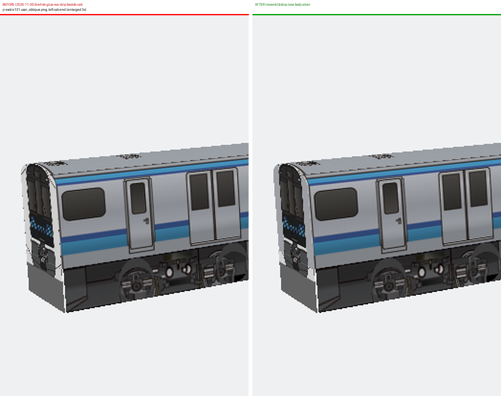
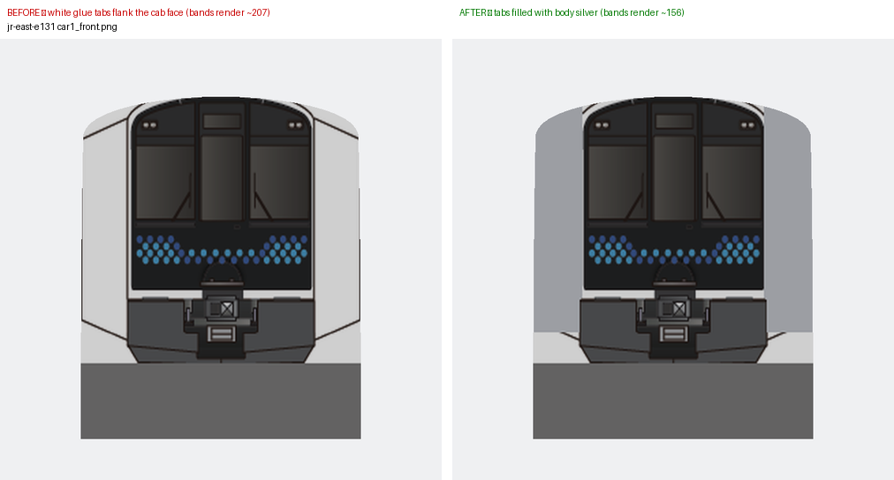
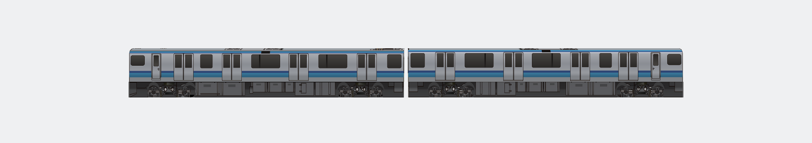
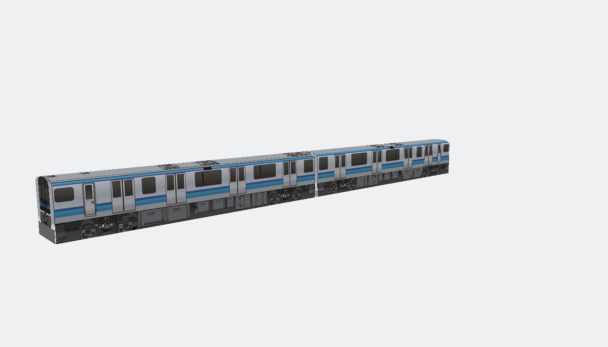
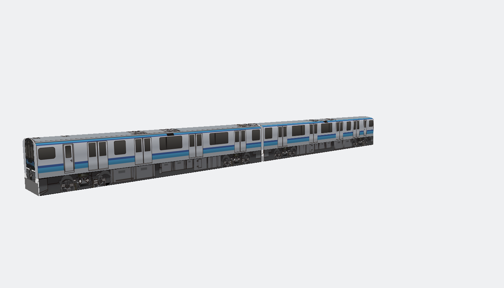
根因（“奇怪”到底哪几处错，共 6 处 + 胶耳）：①相机角度：旧整列图拍成 3/4 斜角，不是平侧面；②车头一大块黑：前头是竖直平板 + 照抄图纸的黑色风挡，整面糊成黑板；③屋顶硬台阶：车顶在距车头约 7 m 处有 0.253 m 垂直台阶；④长度错：旧 20.8 m，实车 21.3 m；⑤裙板是灰板：前后裙板贴图是单色 (136,139,144)，无任何细节；⑥贴图错位：两侧贴图几乎相同、不是镜像（一侧 OZATORO 会反），转向架轮子位置错（前后转向架中心各偏 ~1.2 m）；⑦胶耳：近端司机室下有耳片垂到裙板下、超出车体轮廓。
改了什么：图纸 aidu/aidu_at400_furanbo.pdf（2021 年现行涂装）+ 实车照片从头重建：圆头斜风挡、两段式大风挡、圆顶展望席 + 平顶后部、白底蓝渐变带 + 金色 OZATORO；车长 21.3 m、宽 2.93 m、高 4.065 m；车顶改平滑圆顶；前头两段式；裙板改用图纸自身设备/车钩段；两侧各取自己一侧的图纸条带、按观看方向换边——两侧 OZATORO 都正读；轮子全部擦掉重画在实车位置 2.60/4.70/16.60/18.70 m；胶耳排查逐项检查——裙板下无任何耳片，两侧两端都干净。
推送：删除 47394229（index 662 → 661，目录 404）+ 重建 60c97277（父 a6c39a1b，单 commit），car1.glb 33d132aa…（3,128,380 B）、consist.json bc758c11…，远端下载逐字节比对一致；index 661 → 662，仍有序；model_map.json 未动。
验证：23,306 三角形、watertight、bbox 2.93 × 4.065 × 21.326 m、贴图方向 audit sideL/sideR −1.00、front −0.93、end1 −0.95；边距全 ≥2%（整列平侧面 L/R 11.1%、斜视角 L 10.1%、三维形态图 L 5.1%）；实车对照（2021-10 照片）：圆头斜风挡、白底蓝带 + 金色 OZATORO（两侧正读）、AIZU 标志、前灯、门窗布局、4 轮位置均一致。
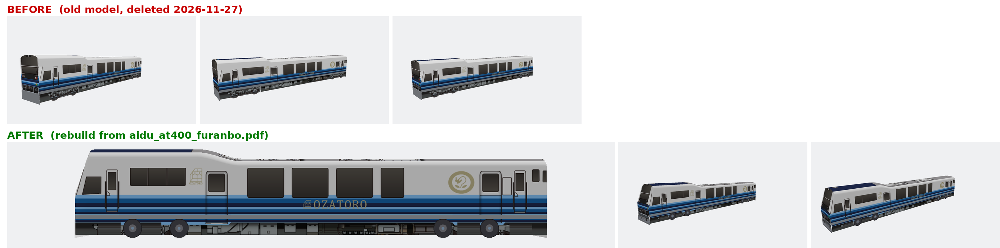
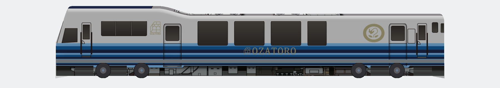
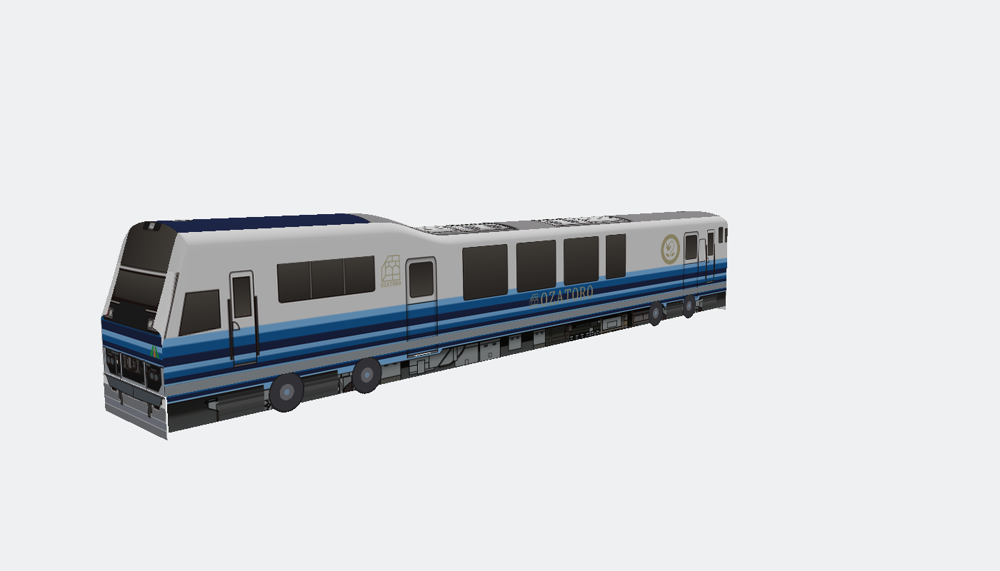
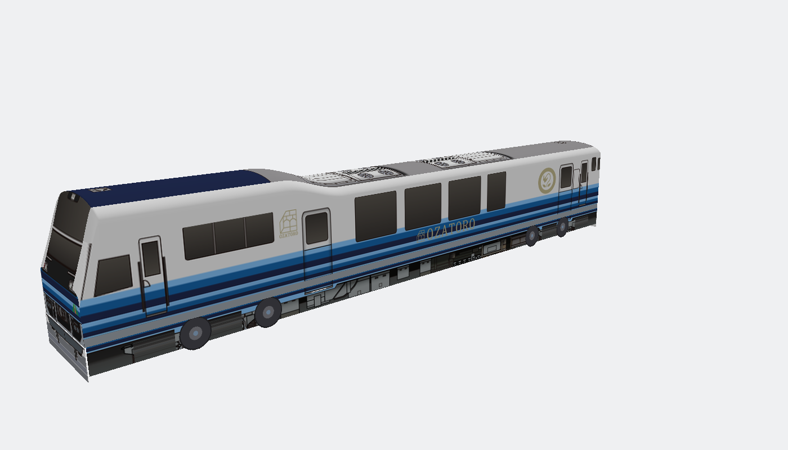
另：hiroden-1000（#23）MC 已说 OK、已推送（提交 958f08c4，index 662），不算返工、不在本页。kiha40 与 500系仍等 MC 定夺、未推。toei-5500 单独页见 toei-5500（MC 要求单独看）。工作目录：~/workspace/jr3d/work/rework-batch1-20261127/。